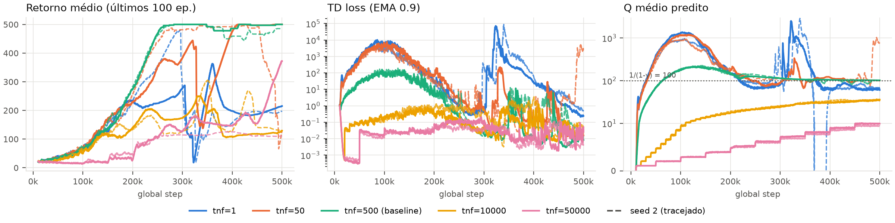
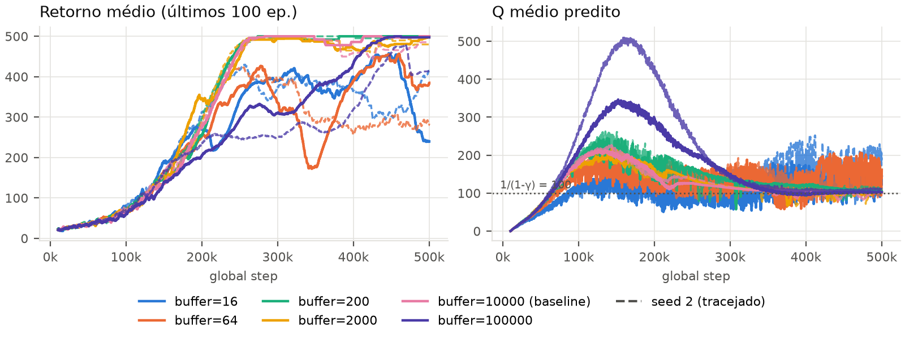
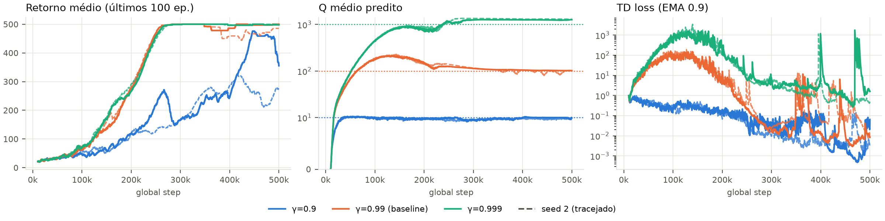

Implementação. ReplayBuffer.add escreve na posição pos e avança um ponteiro circular (pos = (pos+1) % capacity, size = min(size+1, capacity)), sobrescrevendo a transição mais antiga quando cheio. sample sorteia índices uniformes com reposição em [0, size) — nunca em slots vazios. compute_td_targets retorna y = r + γ·maxa' Qtarget(s',a')·(1−done), com o max vindo da target network, done marcando só terminações (truncamento em 500 passos continua fazendo bootstrap) e r/done achatados para shape (B,). Os 7 testes passam; o baseline chega a retorno 500 (eval greedy 500 ± 0 nas duas seeds).
Protocolo. Todos os runs usam configs/dqn_cartpole.yml (500k passos), mudando apenas o hiperparâmetro da questão via --override, com 2 seeds em todas as configurações (seed 1 = linha cheia, seed 2 = tracejada). TD loss suavizada com EMA 0.9 só para leitura. Linha pontilhada nos gráficos de Q: 1/(1−γ), o maior valor possível no CartPole (recompensa 1 por passo) — a referência que permite dizer se Q está certo, e não só se está estável.
dqn.target_network_frequency ∈ {1, 50, 500, 10000, 50000})Previsão. Com tnf=1 o alvo se move junto com a rede que está sendo treinada; espero que q_values cresça sem controle (superestimação que se realimenta) e o retorno fique instável. Com tnf muito grande o alvo fica quase congelado: o treino deve ser estável, com td_loss baixa, mas lento, porque o valor só se propaga a cada sincronização.

| tnf | retorno final (s1 / s2) | eval greedy (s1 / s2) | Q máx. | Q médio >400k | TD loss mediana | wandb run ids (s1, s2) |
|---|---|---|---|---|---|---|
| 1 | 215 / 198 | 223 / 208 | 2631 / 2931 | 69 / 70 | 60 / 55 | nxv89hnf, 68hrq80o |
| 50 | 500 / 130 | 500 / 479 | 1208 / 1053 | 103 / 212 | 4.8 / 3.0 | 7z89c72w, 51ye09dc |
| 500 (baseline) | 500 / 485 | 500 / 500 | 216 / 232 | 103 / 98 | 0.24 / 0.48 | 5w0roffb, ai4c257z |
| 10000 | 130 / 130 | 115 / 130 | 37.5 / 37.5 | 33 / 35 | 0.06 / 0.11 | yggog0vi, 1u52wg0d |
| 50000 | 372 / 111 | 467 / 107 | 10.3 / 9.9 | 9.5 / 9.0 | 0.016 / 0.014 | e9b9ui66, 09hrkdph |
Explicação. O alvo de TD depende da própria função Q que está sendo aprendida; a target network é uma cópia defasada que transforma cada janela de tnf passos numa regressão supervisionada comum, com rótulos fixos. Com tnf=1 essa proteção some: o maxa' escolhe sistematicamente os erros positivos de Q, esses erros viram rótulo no passo seguinte e são amplificados. O gráfico de q_values mostra isso de forma direta: Q chega a ~1300 em 100k passos e a ~2600–2900 perto de 320–340k, 26–29× acima do limite físico de 100. O colapso do retorno (de ~290 para ~20 na seed 1) acontece exatamente no pico de Q, com TD loss chegando a 104. Com tnf=50 o efeito é o mesmo, só que mais fraco: Q ~1200 no início, e a seed 2 diverge de novo aos 470k (Q→1053, retorno 490→130). Previsão confirmada, inclusive a dependência de seed.
No outro extremo, tnf grande gera TD loss minúscula (mediana 0.016 com tnf=50000, 15× menor que o baseline) e ainda assim a política é ruim. A TD loss só mede a distância de Q a um alvo que a própria rede define; com alvo congelado, a rede o ajusta com facilidade, e a perda fica baixa sem que Q esteja perto do valor verdadeiro. q_values explica o mecanismo: cada sincronização propaga só um passo do backup de Bellman, então depois de k sincronizações Q ≈ Σi<kγi. Com tnf=50000 houve ~9 syncs e Q estabilizou em 9.5. Com tnf=10000, ~49 syncs dão (1−0.9949)/0.01 = 38.9, e o valor observado foi 37.5. Os saltos em degrau da TD loss a cada 50k passos são justamente essas sincronizações. A rede só "enxerga" ~10–40 passos à frente e não consegue distinguir estados que falham em 50 passos de estados que nunca falham. É por isso que o retorno fica em ~110–130 (a seed 1 com tnf=50000 subiu no fim por sorte e não se repetiu na seed 2). A previsão de "lento" se confirmou, mas subestimei o tamanho do efeito: em 500k passos o treino não chega a convergir.
dqn.buffer_size ∈ {16, 64, 200, 2000, 10000, 100000})Previsão. Um buffer minúsculo deve deixar o minibatch cheio de transições consecutivas e quase idênticas, e fazer a rede esquecer situações que não revisita (p. ex. estados de queda depois que ela aprende a equilibrar), gerando oscilação do retorno e Q ruidoso. Um buffer enorme deve ser estável, mas mais lento, por manter por muito tempo dados antigos da fase aleatória (ε≈1). Esperava que 200 já fosse pequeno demais.

| buffer | retorno final (s1 / s2) | 1º passo com retorno ≥ 450 | Q máx. | Q >400k: média ± desvio | wandb run ids (s1, s2) |
|---|---|---|---|---|---|
| 16 | 240 / 415 | 428k / nunca | 205 / 257 | 131 ± 43 / 174 ± 58 | zyf6boas, uoeeq6pd |
| 64 | 385 / 284 | 438k / nunca | 216 / 230 | 158 ± 41 / 124 ± 40 | 11jpsr7u, 5yun2dex |
| 200 | 500 / 500 | 240k / 243k | 257 / 269 | 112 ± 5 / 109 ± 9 | sjlrp5u7, 4uwqh0tq |
| 2000 | 497 / 482 | 250k / 237k | 205 / 222 | 100 ± 5 / 101 ± 6 | nznb3q7v, 9aqf7dgw |
| 10000 (baseline) | 500 / 485 | 244k / 245k | 216 / 232 | 103 ± 1 / 98 ± 6 | 5w0roffb, ai4c257z |
| 100000 | 497 / 414 | 405k / 447k | 354 / 529 | 101 ± 2 / 108 ± 3 | k9jj7qlv, p0z6nmdh |
Explicação. Um buffer muito pequeno causa dois problemas distintos. (1) Correlação dentro do minibatch: com buffer=16 e batch=128, cada minibatch repete as mesmas ~16 transições consecutivas ~8 vezes. Todas vêm do mesmo trecho de uma única trajetória, então o gradiente deixa de ser uma estimativa do erro médio sobre o espaço de estados e passa a ajustar a rede à situação do momento, puxando Q para lá e para cá. No gráfico de q_values, as curvas de 16 e 64 são uma faixa larga de ruído: desvio de 40–58 na fase final, contra ~1–6 no baseline. (2) Cobertura / esquecimento: a rede só pode rever os últimos 16–64 passos. Quando a política melhora, o buffer passa a conter só estados "bons", perto do centro. Estados de queda somem do conjunto de treino, seus valores deixam de ser corrigidos e a rede os esquece. O gráfico de Q mostra essa deriva: depois de 350k a média de Q fica em 124–174, acima do limite de 100, ou seja, a rede superestima justamente as regiões que não revê. O retorno responde com ciclos de aprender e desaprender (buffer=64 s1 cai de 425 para 175 aos 340k e volta; buffer=16 s1 cai de 450 para 240 no fim). Nenhuma das quatro seeds chega a um platô estável em 500.
A previsão foi parcialmente refutada quanto ao limite: buffer=200 aprende tão bem quanto o baseline nas duas seeds. No CartPole, 200 transições já cobrem vários episódios no início do treino e o espaço de estados relevante é pequeno; foi preciso descer a 64 ou menos para expor os dois efeitos. No extremo oposto, buffer=100000 leva quase o dobro de passos para chegar a 450 (405–447k contra ~245k) e tem o maior pico de Q (354 e 529). O buffer só começa a descartar dados depois de 100k passos, então ao redor de 150k a maior parte das amostras ainda vem da fase com ε alto: transições de uma política muito pior, que a rede ajusta com bootstrap pouco confiável, enquanto cada transição recente é revista com menos frequência. O resultado é convergência mais lenta, e não instabilidade (Q termina em ~101–108, com desvio de 2–3), como previsto.
dqn.gamma ∈ {0.9, 0.99, 0.999})Previsão. Com recompensa 1 por passo, Q deve convergir para ≈1/(1−γ) (10, 100, 1000). γ=0.9 tem horizonte efetivo de ~10 passos, curto para "ver" uma queda que se desenha em dezenas de passos, então espero pior desempenho. γ=0.999 deve funcionar, mas com alvos 10× maiores, TD loss maior e mais instabilidade.
Gráficos escolhidos e por quê. episodic_return_mean_last100 mostra o resultado. q_values com as linhas 1/(1−γ) mostra diretamente o que γ muda (a escala e o horizonte do valor) e permite verificar a convergência para o valor teórico. td_loss em escala log está lá para mostrar que a TD loss não é comparável entre γ: ela cresce com a escala dos alvos (o erro quadrático é proporcional à magnitude de Q ao quadrado). charts/epsilon não foi incluído porque o cronograma de exploração é idêntico em todos os runs.

Explicação. q_values confirma a previsão com precisão: Q converge para 10.0 (γ=0.9), ~100 (γ=0.99) e ~1250–1310 (γ=0.999). Neste último caso há uma superestimação de 25–30%, consistente com o viés do max amplificado por alvos maiores. Com γ=0.9, Q satura em 10 em apenas ~50k passos. Um estado que falha em T passos vale (1−0.9T)/0.1, e para T ≥ 30 isso é ≥ 9.6: a diferença entre "cai daqui a 30 passos" e "nunca cai" é menor que 0.4, abaixo do ruído da regressão. O agente só aprende a evitar quedas iminentes e não corrige derivas lentas (p. ex. o carrinho saindo pela borda). O resultado é retorno final de 272–355 e eval greedy de 161–285, com oscilação: previsão confirmada. Com γ=0.999 o horizonte (~1000) cobre o episódio inteiro de 500 passos e o aprendizado acompanha o baseline (eval 500 nas duas seeds). O custo aparece na td_loss: uma ordem de grandeza acima do baseline durante todo o treino, com picos de ~103 aos 400k e 470k. Eles não derrubaram o retorno, mas mostram que a mesma taxa de aprendizado dá passos efetivamente maiores quando os alvos são 10× maiores. A instabilidade prevista existe na perda, mas nesta tarefa não chegou a afetar a política.